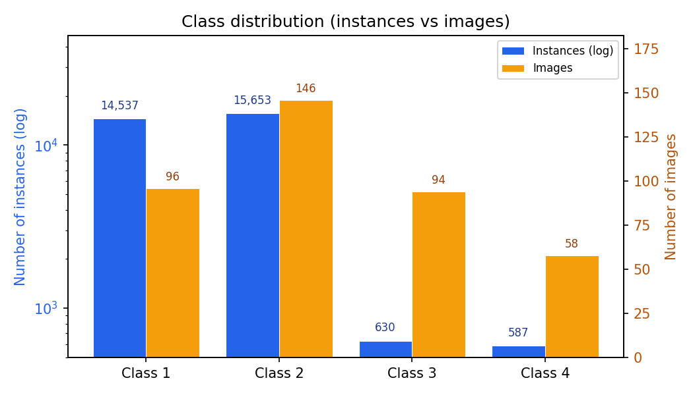
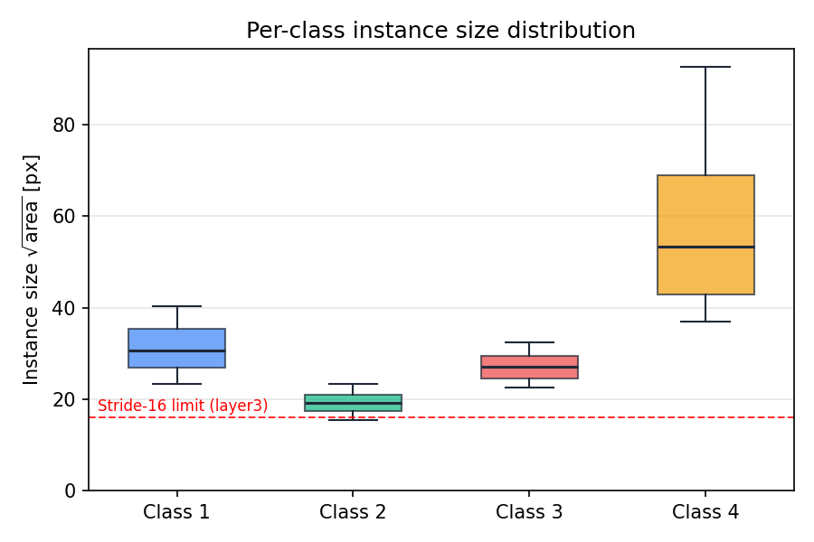
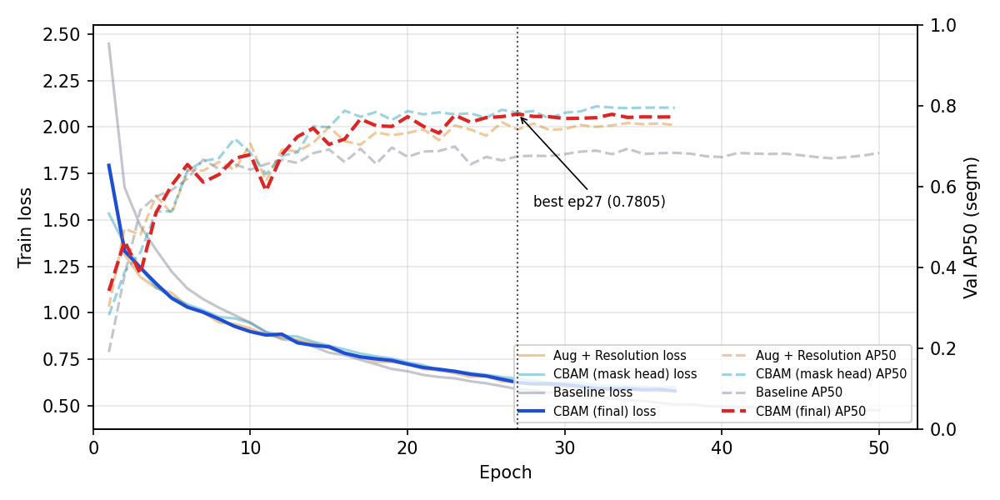
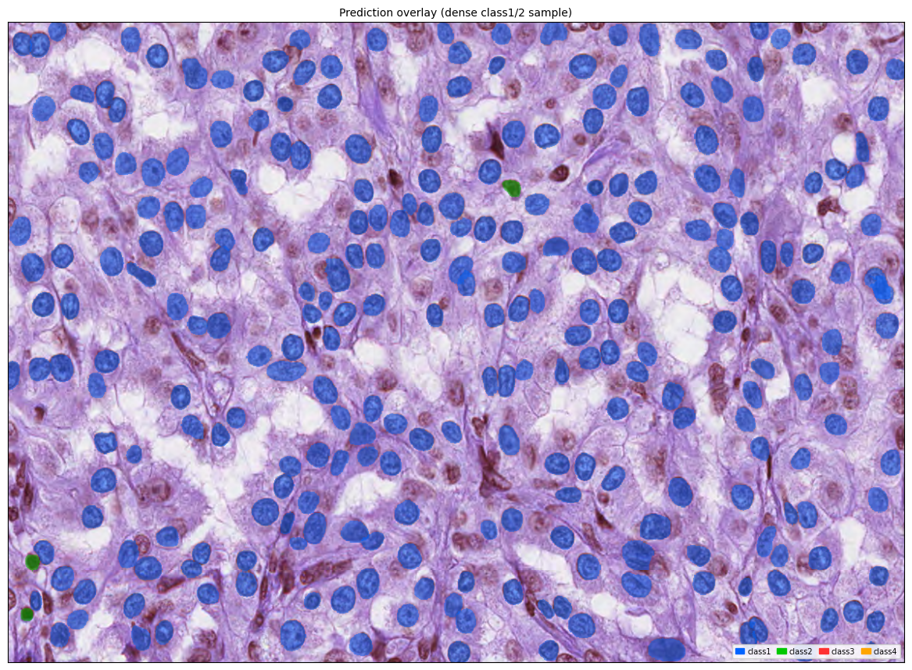
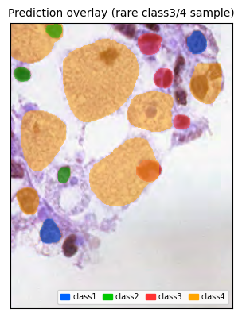

I present an instance segmentation system for medical cell images with four cell types (class1–class4) using Mask R-CNN with a ResNet101-FPN backbone. I address three key dataset challenges — severe class imbalance (class1/2 have 25× more instances than class3/4), tiny instances (20.5% of class2 instances have $\sqrt{\text{area}} < 16$ px), and variable image sizes — through targeted preprocessing, custom anchor design, and aspect-ratio-aware augmentation. I further improve the backbone with CBAM (Convolutional Block Attention Module) attention at ResNet stages 3 and 4, which yields simultaneous improvements on both validation ($\text{AP}_{50}$: 0.7599 → 0.7805) and the hidden test set ($\text{AP}_{50}$: 0.5675 → 0.5828), confirming genuine generalization rather than overfitting.
Instance segmentation is a fundamental computer vision task requiring per-pixel classification of every object instance. In medical imaging, accurate segmentation of individual cells is critical for downstream analysis. This work addresses the CodaBench instance segmentation challenge on a dataset of 4-channel TIFF medical images containing four cell types (class1–class4), with 209 labeled training images and 101 unlabeled test images.
The dataset presents three key challenges:
I adopt Mask R-CNN [2] with a ResNet101-FPN [3] backbone as our base model, augmented with CBAM attention modules [4] at backbone stages 3 and 4. The final model achieves validation $\text{AP}_{50}$ = 0.7805 and leaderboard $\text{AP}_{50}$ = 0.5828.
Figure 2 shows the severe class imbalance: class1 and class2 dominate with 14,537 and 15,653 instances respectively, while class3 and class4 have only 630 and 587. Figure 3 shows that instance sizes vary dramatically across classes — class2 has the smallest instances (median $\sqrt{wh}$ = 19.2 px) while class4 has the largest (median 53.4 px).


Decisions driven by data analysis:
Class imbalance — I apply WeightedRandomSampler with weight ×3 for images containing class3 or class4 instances, increasing their sampling probability to expose the model to rare classes more frequently during training.
Tiny instances — Standard anchor configurations start at size 32×32. Since 20.5% of class2 instances are smaller than 16 px in $\sqrt{wh}$, I use a custom AnchorGenerator with sizes ((4, 8), (16, 32), (32, 64), (64, 128), (128, 256)) across FPN levels P2–P6, providing anchor coverage down to 4 px.
Dense images — Some training images contain up to 772 ground-truth instances, causing GPU memory overflow. I filter out images with more than 400 instances (skip_above_instances=400), keeping 178 of the 209 images.
Aspect ratio variation — I add RandomIoUCrop (scale 0.5–1.0, aspect ratio 0.2–5.0) to augment the model's exposure to non-square crops, addressing the distribution shift between (nearly square) training images and the wider-aspect-ratio test images.
Multi-scale training — I train with random short-side resizes of min_size ∈ {640, 768, 896, 1024} px (max 1024 px) to handle the wide range of image sizes.
Additional augmentations: RandomHorizontalFlip (p=0.5), RandomVerticalFlip (p=0.5, justified by the absence of orientation bias in cell images), RandomPhotometricDistort (brightness/contrast/saturation/hue).
The base model is Mask R-CNN [2] with a ResNet101-FPN [3] backbone pretrained on ImageNet (IMAGENET1K_V2 weights), with all 5 backbone stages fine-tuned.
CBAM Attention. I insert CBAM modules [4] between the ResNet body and the FPN, applied to the layer3 (1024-channel) and layer4 (2048-channel) feature maps. Each CBAM module applies channel attention followed by spatial attention:
Total CBAM parameters: ≈0.66 M (+1.0% over the 64 M backbone).
Inference post-processing. After per-class NMS, I apply cross-class NMS (IoU threshold 0.5) to suppress duplicate detections of the same cell assigned to different categories. Score threshold is 0.05 for COCOeval (to preserve the full precision-recall curve) and 0.5 for visualization.
| Parameter | Value |
|---|---|
| Optimizer | AdamW |
| Learning rate | $1 \times 10^{-4}$ |
| Weight decay | $1 \times 10^{-4}$ |
| LR schedule | CosineAnnealingLR ($\eta_{\min} = 10^{-6}$) |
| LR warmup | Linear, 500 steps, start_factor = 0.1 |
| Epochs | 37 |
| Batch size | 2 (gradient checkpointing) |
| Mixed precision | PyTorch AMP (autocast + GradScaler) |
| Score threshold | 0.05 (COCOeval), 0.5 (NMS) |
Hypothesis. Including 5 more high-density images (400–499 GT instances, previously filtered) would expose the model to more class2 diversity and improve performance.
Change. skip_above_instances raised from 400 to 500, adding 5 images and 1,708 extra class2 annotations (+12.7% class2 training data).
Result. Validation $\text{AP}_{50}$ improved by +0.0096 (0.7599 → 0.7695), but leaderboard $\text{AP}_{50}$ dropped sharply by −0.0327 (0.5675 → 0.5348). The val–test gap widened from 0.192 to 0.235.
Analysis. The 5 added images are among the densest in the training distribution (large, nearly-square, high-density). The val set is drawn from the same distribution, explaining the val improvement. However, the test set has different geometric characteristics (higher aspect ratios, different scale distribution). Training on more dense square images increases the model's fit to the training distribution without addressing the geometric gap — causing the leaderboard drop. The val–test gap widening (+0.043) is the diagnostic: it flags distribution-specific overfitting, not a genuine model improvement.
Hypothesis. Staining variation between training and test slides may cause certain ResNet feature channels to encode staining artifacts rather than cell structure. Channel attention can learn to down-weight these artifact channels; spatial attention can focus on cell-location features.
Change. Two CBAM modules inserted at layer3 (1024-ch) and layer4 (2048-ch), adding ≈0.66 M parameters and 0.41 GiB peak VRAM.
Result. Validation $\text{AP}_{50}$ improved by +0.0206 (0.7599 → 0.7805); leaderboard $\text{AP}_{50}$ improved by +0.0153 (0.5675 → 0.5828). The val–test gap changed only slightly: 0.192 → 0.198.
Analysis. Unlike the threshold=500 experiment, CBAM modified how the model processes features rather than which images it sees. The simultaneous improvement on both val and leaderboard, combined with the near-static val–test gap (+0.006 vs. +0.043 for threshold=500), indicates genuine generalization. The contrast between these two experiments illustrates a useful diagnostic: when a change improves val but widens the val–test gap, it is likely distribution-specific; when both val and leaderboard improve with a stable gap, the change is a real model quality improvement.
Training progress. Figure 1 shows training loss and validation $\text{AP}_{50}$ across all runs. The CBAM run (brightest) achieves its best $\text{AP}_{50}$ = 0.7805 at epoch 27, with the cosine LR decay enabling continued improvement through epoch 23–27 before plateauing.

Comparison. Table 2 summarizes all experiments. The final CBAM model is the best on both metrics.
| Method | Val $\text{AP}_{50}$ | LB $\text{AP}_{50}$ | Val–Test Gap |
|---|---|---|---|
| Baseline | 0.6997 | 0.4958 | 0.204 |
| + Aug & Resolution | 0.7599 | 0.5675 | 0.192 |
| + Dense thr=500 | 0.7695 | 0.5348 | 0.235 |
| + CBAM (final) | 0.7805 | 0.5828 | 0.198 |
Qualitative results. Figure 4 shows example predictions on two validation images. The model successfully segments densely packed small cells (class1/2) and correctly identifies the sparser, larger class4 cells.

